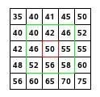

Demystifying median filter
Filtering is a technique used to modify or enhance images. For example, we can filter image to blur it. Filtering can be used for smoothing, sharpening and edge enhancement. We use filters in photo-editing apps as well. In this blog post, I will demystify filtering with an example of median filter which is a very basic non-linear digital filter. Please read my previous post on How do computers see an image? before going through this. Code for this post can be found on github
What is filter ?
Filtering is a technique used to modify or enhance images. In other words, a filter is a particular effect that can be applied to an image or part of an image. Filtering is kind of neighborhood operation, in which value of any given pixel is determined using the values of pixels in the neighborhood of given pixel. Filtering process is mathematical process, in which we deal with values of pixels.
Median Filter
The median filter is normally used to reduce noise in an image. The median filter considers each pixel in the image in turn and looks at its nearby neighbors to apply changes to given pixel. In median filter, it replaces current pixel value with median of neighboring pixel values. But wait, how many neighbors should I consider? Answer is, it depends on the size of a filter. If it is a 3*3 filter then given pixel is considered as a center element of a 3*3 matrix. Filter size could be 5*5 or anyother value. Basically we use 3*3 and 5*5. Throughout in this post I will use 3*3 to make it easy to understand. Please note, most of the filters are using convolution matrix. Convolution is a treatment of a matrix by another one which is called filter or kernel. By convolution we mean sliding filter/kernel over an image (in order to modify pixel values).
Consider above image. Here, we're working with pixel whose value is 50 (shown in red). Since we have filter of size 3*3, our filter will neighboring pixels will be as shown in green areas, which are 40,42,46,46,55,52,56 and 58 . To find a median, first of all, we have to sort above values including current pixel value(50). Now our vector will become 40,42,46,46,50,52,55,56,58. It's median will be 50, so in this case value won't be changed. Likewise, we apply this process to all the pixels. resulting matrix will be our filtered image.
Conclusion
Filtering is a technique used to modify or enhance images. In other words, it's a particular effect which we want to apply to an image. Median filter is a non-linear digital filtering technique. Median filter can be used to reduce noise in an image. Back side of median image is resulting image can be blur. Implementation of a median filter in python can be found here.